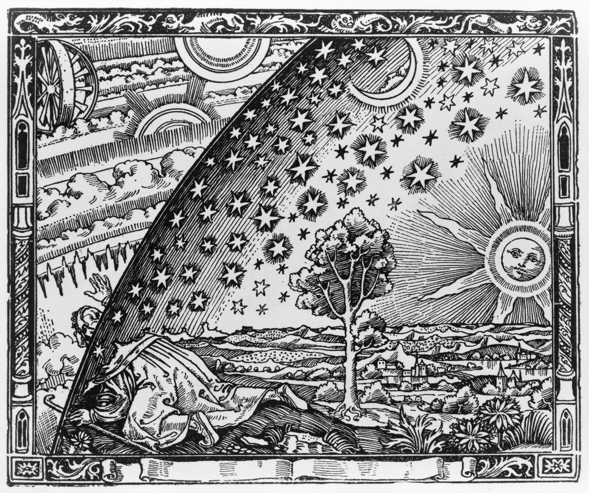

Euclid Consortium
Lead of the Key Project on the joint 2PCF + 3PCF full-shape analysis of Euclid DR1 (since 2026).
Cosmologist · University of Bologna
I extract non-Gaussian information from the large-scale structure of the Universe with higher-order clustering statistics, from theory and emulators to the first joint 2PCF + 3PCF analysis of real survey data.
INSPIRE-HEP, October 2026

§ 01 · Now
Lead of the Key Project on the joint 2PCF + 3PCF full-shape analysis of Euclid DR1 (since 2026).
Lead of the Quasar and Galaxy Clustering + IGM/Lyman-α work package of the Cosmology Working Group (since 2024).
Postdoctoral researcher with Michele Moresco; co-supervising PhD and MSc theses.
§ 03 · Recent talks